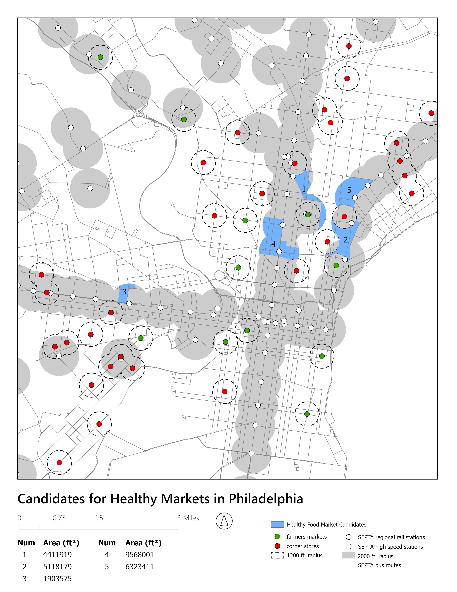

Identifying Candidates for Healthy Food Markets in Philadelphia

Problem
How can we select specific areas that aren't already neatly divided into enumeration units?
(Think about having previously selected neighborhoods/census tracts
by attribute/location.)
What kinds of problems call for geoprocessing operations instead of selections?
Geoprocessing operations are necessary when an area needs to be selected
based on a variety of criteria that are defined by different geographic
areas.
How can we get the match of a Union to work for our problem-solving areas?
A Union will allow for separate areas or shapes to be combined. In the
case of selecting an area, this allows for the combination of areas
based on a single or multiple parameters to get a single defined area
that fits the given criteria.
Why are buffers and geographic distance useful tools for selecting (or not selecting) specific areas?
A Buffer allows for a controlled radius to be selected around a specific
point, line, or area, allowing the user to select or deselect areas
based on their proximity or adjacency to something.
GIS Tools and Skills Used
-
Buffers – Buffers provide an area at a specific
distance around an object (area, line, or point).
-
Multipart to Singlepart – Multipart to Singlepart
breaks an object that has been dissolved into a multipart object
into its single parts, creating separate object instances within
the layer.
-
Dissolve – A Dissolve takes multiple objects
within a layer and combines them into either a single part or
multiple parts based on a specific field.
-
Spatial Join – Spatial Join allows you to attach
vector data based on spatial criteria rather than using common
tabular data.
-
Clip – A Clip can trim a vector object using
another vector. This helps keep a map clean or focus on a
specific area.
-
Erase – This command can use a polygon vector
to cover or remove data from another vector.
-
Intersect – Intersect allows you to determine
the overlapping areas of two or multiple different vectors.
-
Union – Union combines multiple vectors into a
single vector layer. This allows for the combination of multiple
different areas to define a larger region.
← Back to Portfolio